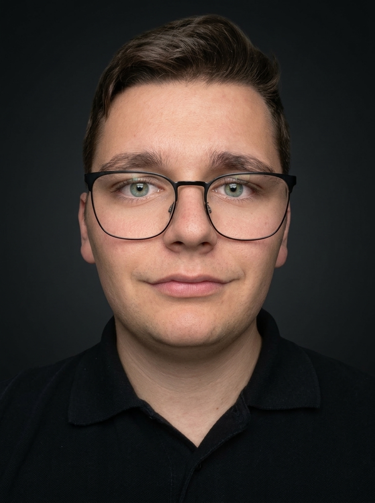

Mai 2026
SAÉ 202
SAÉ 202
Campagne « Lacoste Goliath »
Conception d'une campagne 360° pour une veste connectée : direction artistique, affiche print, tournage vidéo avec VFX sous After Effects et site WordPress.

Étudiant en 2e année de BUT MMI au Puy-en-Velay, passionné par la direction artistique, l'édition print et le développement web. Créatif et rigoureux, je conçois des identités visuelles, des maquettes print et des interfaces fonctionnelles de A à Z.
 « Stage 10 à 12 semaines
« Stage 10 à 12 semainesConception d'une campagne 360° pour une veste connectée : direction artistique, affiche print, tournage vidéo avec VFX sous After Effects et site WordPress.
Coordination des sponsors (1 250 € récoltés pour autofinancer le tirage), communication, planification, maquette éditoriale InDesign et rédaction d'article.
Refonte vectorielle complète du blason historique du club du Puy-en-Velay et rédaction de la charte graphique officielle normée.
Système de déclinaisons de logos, affiches print, storyboard et animations sous After Effects.
Stratégie de communication et recommandations graphiques pour une campagne nationale de sensibilisation et d'adoption.
Magazine spécialisé créé de A à Z : chemin de fer, rédaction, schémas techniques vectoriels, fausses publicités et maquette InDesign.
Calculateur interactif de spine et comparateur technique développé en JavaScript pour configurer le matériel d'archerie.
Refonte de l'identité visuelle complète d'une enseigne spécialisée en tir à l'arc et création des print et réseaux sociaux.
Collection de 18 compositions graphiques inspirées des maillots des équipes du peloton cycliste.
IUT Clermont-Auvergne, site du Puy-en-Velay (43)
IUT de Rodez, Rodez (12)
Lycée Alexis Monteil, Rodez (12)